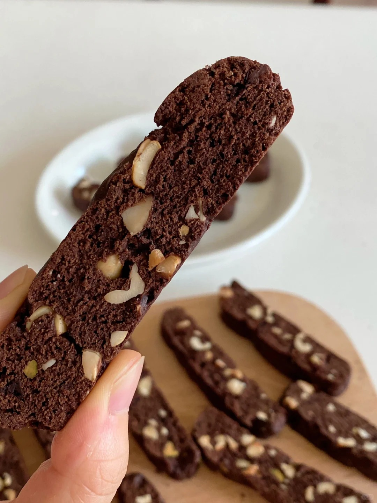
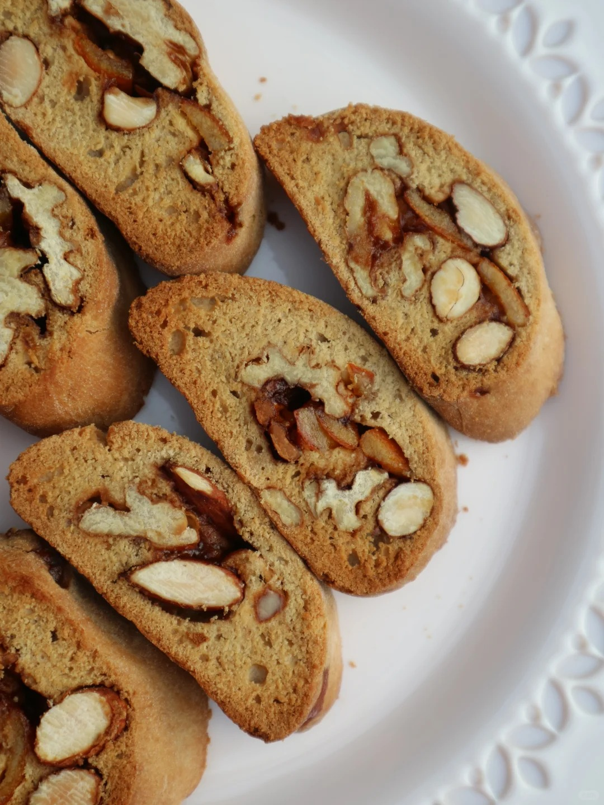

意式脆饼


意式脆饼（Biscotti）是起源于意大利托斯卡纳地区的传统烘焙点心，其名称源自意大利语中“bis”（二次）与“cotti”（烘烤）的组合。传统配方不含油脂，以面粉、鸡蛋、糖为主料，改良版加入黄油提升口感。该饼干通过两次烘烤形成坚硬酥脆的质地，具有耐储存特性，历史上曾作为海员携带食品。制作时将混合面团（含泡打粉、果干等辅料）首次烘烤定型，冷却切片后进行二次烘烤脱水。工艺核心在于首次烘烤后需充分冷却防止碎裂，切片时建议使用锯齿刀。现代衍生配方拓展至全麦粉、咸蛋黄等低卡组合，搭配咖啡或甜酒食用成为典型特征。成品适合长期保存。
制作方法：